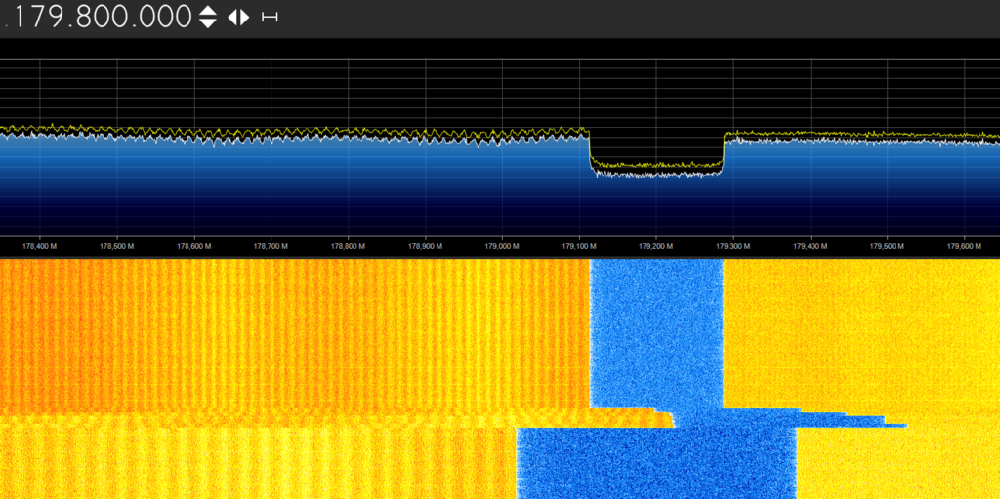
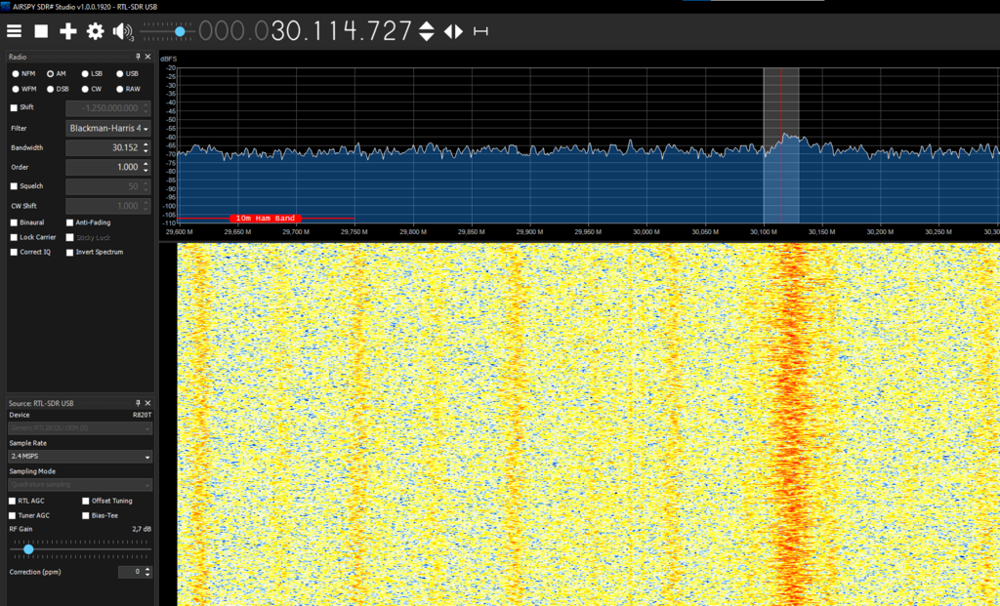

What
Amateur radio and software defined radio is a big field with a lot to learn. It touches on various fields of technology from voice communication, but also digital transmission for WiFi, Smart Home and IoT. As such I’ve come into contact with it from various angles from time to time. The following summarizes what I’ve learned about receivers, antennas, connectors, cables, useful software and some signals I’ve received.
Contents
Contents
When
History
My first touchpoint with amateur radio has been building custom antennas for Wifi. That sparked a later interest in Software Defined Radio, when personal computers became powerful enough to handle the through-put. Cheap receivers came to market and that made software defined radio easily accessable.
Wireless LAN (WiFI)
According to a page on the history of WiFi [7], WiFi hat its mass adoption 1999 (802.11b) to 2003 (802.11g) and was then extended in 2012 (802.11a).
It very quickly became widespread. Finding wireless access points became somewhat of a hobby for some. This has brought some interesting antenna designs to widespread attention.
Homemade Wifi Antennas
In order to increase range of your WiFi devices you can build custom antennas. Building such antennas has been an entry point to amateur radio and ham radio for me.
I most probably first heard about the “Pringles Cantenna” in an early online tv show “The Broken” [5] on a now defunct network called “Revision3” some time in the 90s.
It was in an episode of this series that they showcased “Wardriving” [4]. Wardriving is driving around in your car with Wifi-Antennas and trying to pick-up beacons from wireless access points and putting them on a map. In order to increase range they built custom so-called “Cantennas” which are Antennas made from common house-hold supplies like Pringles cans.
Naturally I had to build such an antenna, but it took me until ‘09 to get back to the subject and build it properly. In the meantime I had acquired a Netgear wg511t that I immediatly broke trying to solder an external antenna connection to it and then an Alfa Networks RTL8187 card with external antenna connection and better drivers. Eventually I found out, from a different tv show Hak5 [6], that you could buy “Fonera” Wifi routers and flash a minimialist Linux for routers, OpenWRT, to it and run the war driving tools directly on the router. That was 15 years ago in 2008.
Software Defined Radio
The term “Software Defined Radio” seems to be first mentioned on the internet [1] in ‘98. The idea is to not build a radio per purpose and do all the signal analysis in hardware, but rather push the raw signals into a computer and do the analysis entirely in software. This has significant adavantages in terms of flexibility and reduced cost of the receiver, but computers had to become powerful enough to handle the load first.
After a large gap more papers were published in ‘06. It seems WebSDR.org, a network of software defined radios that can be accessed via the internet from anywhere in the world came about around ‘08. The GUI Software Sdr# for Windows and Linux was moved to GitHub from Google-Code in ‘11 according to the GitHub History. Support for RTL2832 USB dongles seems to have been added July 2012.
With the RTL2832 USB dongles, intended for DVB-T television reception, a large wireless spectrum (25 to 1760 MHz) can be received when running a modified driver software. The receivers cost only around 20 to 35 Eur. This made it really easy for hobbyists to get into software defined radio.
I bought my RTL2832 around ‘16. Conincidentially DVB-T television reception was shut down in March 2017 in many German cities. DVB-T2 was then rolled out until 2019. DVB-T2 supporrts PayTV and many channels require decoding cards. Since the same channels can be received for free via DVB-S, the satellite reception, it hasn’t been adopted by customers. By 2030 DVB-T2 will probably be shutdown.
I asume part of the price drops in RTL2832 USB dongles is due to adoption rates not being as high as expected, but also the receivers covering a broad range of singles and being built into many receiving devices making for good margins in production. When combining the RTL2832 and R820T2 you can even receive 100 KHz to 1.7 GHz [8].
Background
Frequencies
Depening on use case different frequencies are used. Wikipedia has great image of the electromagnetic spectrum.
(Image taken from [10])
What a lot of people don’t realize is that everything around us is part of the electronicmagnetic sprectrum. Warmth we feel is Infra-Red (IR). Things we see are visible light. Noise we hear.
There are also signals that we our sensory organs are not able to pick-up. For these areas we may have radios to translate them into the ranges we can hear e.g. an FM-Radio translates FM Radio signals at 87.5 to 108 MHz to audible sounds we humans can hear.
Legality of Transmissions
In order to transmit at certain frequencies and at certain intensities you need to be a licensed radio operator.
But for only passively receiving signals you don’t need the license.
Tuning to Frequency
Your Radio receiver may be able to tune to a large range of frequencies, but each Antenna is built for a specific frequency range. This means other frequencies may also be receivable, but are significantly damped. The frequencies the antenna is build for will have the best change to pass-through to the receiver.
So ideally we have multiple antennas for each frequency range we want to receive.
Digital broadcasts and encryption
Nowadays many signals are digital and may also be encrypted and/or compressed. This means you will receive binary streams that are hard to make sense of. Tools like GnuRadio can be setup to decode such signals, but this is very teadious.
There are cases where people have succeeded in decoding the signals of local public transportation services to get the schedule, but it is usually easier to just use the internet API that most public transportation services offer.
There are however a few transmissions we still can easily receive. Cheap unencrypted walkie talkies, radio, public broadcast transmissions from nearby airports, citizens band voice communication to name a few.
Easily Receivable Frequencies
Even tough many signals are digital, publically undocumented encrypted or compressed, there are many signals we can easily receive and make sense of.
WiFi
Wireless LAN or WiFI and its standards 802.11 b/g/n/ac/ax generally transmit in the 2,4 GHz or 5 GHz frequency range.
These signals are very high through-out, require a complete Wireless and TCP/IP stack to decode and are out-of-range of a cheap software defined radio, but we have WiFi routers and USB Wifi-Receivers.
I mention WiFi, the RTL2832 receiver and software-defined-radio together, because building antennas for Wifi is not much different than building antennas to receive different fequency ranges with Software-defined-radios.
WiFi signals are usually encrypted, but the beacons aren’t and so you can locate and identify Wifi-Routers.
FM Radio
FM radio transmits between 87.5 to 108 MHz in most countries. This can be easily received with the RTL2832 USB dongles and can serve as a quick test for the receiver.
DVB-T
“Digital Video Broadcasting Terrestrial” (DVB-T) which is what the RTL2832 USB dongles were made for uses frequencies between 698 MHz and 786 MHz.
Receiving and decoding them is best done with the software provided with the dongles or VLC.
The channel 49 is on 698 MHz and the last channel, channel 60 is transmitted on 786 MHz. Unfortunately most transmissions have been shut down here in Germany.
Airport Broadcasts
I’ve received signals from an airport on roughly 122 MHz. It’s a nice party trick to say you can receive airport transmissions.
These signals are from the “Automatic Terminal Information Service” [11]. There is a continious voice transmission on the current weather conditions and the runways.
Citizens Band Radio
Citizens Band Radio or “CB-Funk” has a frequency range of 26,565 MHz to 27,405 MHz for 80 channels. Here you can receive truck drivers and cab drivers informing each other about traffic jams, but also larger construction sites seem to communicate on this channel.
It an be interesting to listen in and try to figure out from where the transmission originated by looking up, for instance, the street names they mention.
ADS-B
A digital transmission that can easily be received is “Automatic Dependent Surveillance - Broadcast” (ADS-B). These are digital signals broadcasted unencrypted by nearby aircraft to inform of their flight number, position and travelling direction.
It can be interesting to receive these signals in oder to know where aircraft flying overhead are headed to.
Additional
Additionally there are many defunct weather satellites that are still transmitting. Some of which are streaming low-resolution black and white footage back to earth.
The International Space Station (ISS) sometimes offers HAM radio sessions where they talk to HAM radio operators, often schools and universities, but also hobbyists. They transmit at 145.800 MHz FM. In order to receive signals you need a large antenna and you can only receive as they are passing overhead - the ISS travels quickly.
How
Hardware
In order to receive signals we need a reciever, cabling and an antenna. There are many options.
Receivers
For different parts of the spectrum we need different receivers. The RTL2832 handles 25 to 1760 MHz. Wifi 802.11g is in the 2.4 GHz. 802.11a transmits at 5 GHz.
Additionally for Wifi reception we typically use purpose build Wifi receivers to handle the high through-put.
The RTL2832 on the other hand is more suited to voice transmissions, citizens band radio, more broadly HAM radio, aircraft ADS-B information, FM radio reception and of course DVB-T television reception.
There’s not much inside the rtl2832 reciever as most of the signal handling is done in software on the computer.

Antennas
Whats interesting with most antennas is that most don’t actively “do” anything. They merely are merely tuned to specific frequency ranges and due to this filter out unwanted signals. They can be directional so you can aim the antenna in different direction to figure out from where a signal came from and to further filter out unwanted signals from other directions.
Antenna Types
There are a large number of different antenna designs. Some are directonal - they can be aimed in one direction. Some are omni-directional - they receive signals from all sides.
Most DIY Wifi Antennas are designs for 2.4 GHz reception. These are to be used with a Wifi-Receiver that has electronics to also handle the Wifi signal.
DIY Antennas build for Software-Defined-Radio will be somwhere in the range of a Software-Defined-Radio receiver, so typically somewhere between 25 to 1760 MHz and depending on what range is of interest.
Stock Wifi Antennas
WiFi-Equipement typically comes with small antennas. These are omni-directional are fine for residential use.
(Some of my old 2.4 GHz Wifi-Equipment and Antennas)
Many Wifi-Devices have RP-SMA connectors to which you can connect other antennas.
Wifi-Cantenna
For fining WiFI signals or receiving over long ranges it’s better to have a directional antenna. The Wifi-Cantenna is a directional DIY Antenna that is just a can with a wire inside. There are many guides online on how to build them [12].
(Image taken from [9])
The antenna has an RG316 “N Female Connectors” connector.
Wifi Pringles Cantenna
The Pringles-Cantenna, like the one I’ve built some time around ‘09/’10 is a bit more complicated. I built this following a guide I found online. It has a threaded rod and aluminium tube spacers with washers inside at a specific distance to better filter the signal.
To build such an antenna you need
- a threaded rod,
- aluminium tube spacers - at specific length for 2.4 GHz,
- washers,
- an antenna connector,
- some household electical wire - at specific length for 2.4 GHz,
- some soldering for the connector,
- two nuts to hold it together,
- some card board
- and a Pringles can that conveniently has an adequate diameter.
The spacers are made from aluminum tube and, together with the washers are pushed over the threaded rod and fastended with the nut. The card board keeps the rod centered.
In order to build this acurately you should use a pipe cutter. This helps geting perfectly straight cuts of the aluminium tube for the spacers.
Stock Antenna of the RTL2832 USB Dongle
The RTL2832 dongles come with a cheap antenna sufficient for DVB-T reception and FM radio, but not so much else.
The connector is an MCX-Plug.
Citizens Band Antenna
For Citizens Band, 27 MHz, 11-Meter-Band I purchased an antenna built for mounting on trucks.
It has a male PL Plug (UHF Plug).
Yagi Antenna
The Yagi antenna design is commonly seen on TV receiver antennas mounted on house roofs. It’s easy to build DIY antennas following this design.
(Image taken from [13])
Di-Pole Antenna
DI-Pole Anteannas are just two wires bent in opposing directions
(Image taken from [14])
Colinear Antenna
A Colinear Antennas can be built of Coax-Wire where for each segment of specific length, the shield is soldered to the core of the next segment and vise-versa.
(Image taken from [15])
Parabolic Antenna
(Image taken from [17])
Calculations
When building antennas we need to tune the antenna to the specific frequency range we want to receive.
There are many calculators online for the various types of antenna to tell you the exact dimensions of each part in order to build an antenna for that specific frequency.
Polarisation
Most antennas can be oriented horizontally or vertically. In case of the dishes ofteb both polarisations can be received accoring to how the “low-noise downconverter” (LNB), at the tip of the dish is configured by the receiver.
Wiring
Most antennas are connected with some sort of coax-cable. Co-Axial means there is a core and a shielding around it. This best prevents cross-talk from other signals.
These cables come in 50 Ohms - typically for amateuer radio - and 75 Ohms - typically for television broadcast.
There is a great video on YouTube on why amateur radio cables use 50 Ohms [16]. The bottom line is that it is a compromise between high-power, high-voltage and low-attenuation.
For receiving - for example your television set - 75 Ohms is better, for also transmitting 50 Ohms is better.
Connectors
There is a whole row of different connectors to conside with radio equipement. The reason is that equipement comes from different industries with different standards. So you’ll need a collection of adapters. But keep in mind: the fewer adapters in your connection the less signal loss.
For the DIY Wifi Antennas - WiFi uses RP-SMA instead of SMA (the difference is the side on which the pin in the center is)
- Wifi-Devices generally use Female RP-SMA
- the Wifi-Antennas have Male RP-SMA Plugs
- for custom built Antennas its advisasble to use RG316 Flange mount attached “N Female Connectors”
- to connect to the WiFi radio you need a “pigtail” adapter from RG316 to RP-SMA
For connecting to the RTL-SDR
- a “pigtail” adapter from the male MCX to female SMA
For the Citizens Band Antenna
- a female PL socket (UHF socket) to SMA (not RP-SMA)
For DIY Antennas of other frequency ranges
- here I use male PL259 UHF plugs like the Citizens Band antenna
Software
For the software we can use the regulare software for the equipement, when using it as intended.
But if you want to use the RTL2832 receivers in other frequency ranges and look at the raw signals, you need different software.
Similarly, if you want to see the Wifi beacons received by your Wifi-Antenna, you need software that can display it.
airodump-ng
Airodump-Ng is a Linux command-line tool that can be found online. On supported Wifi cards it can show the physical addresses (SSIDs) of the access points nearby that are transmitting beacons or data.
SDR# and modified driver
A convenient software for getting started with the RTL2832 is SDR-Sharp (SDR#) [18]. It has been around for some time and displays a nice diagramm where you can visually see where a signal was received.

I used to have it running on Linux, but the installation on Windows is much easier.
Patching the driver
In order to use the RTL2832 one Windows you need to use a patched driver.
For this run the “install-rtlsdr.bat” scrip that comes with SdrSharp. It will make “zadig.exe “available”

The Zadig USB driver tool can then be used to switch the driver for the RTL2832 to “WinUSB”.
You can then select the receiver in SdrSharp.
WebSDR
A common problem with antennas is the distance to the receiver. Ideally you’d like to sit at your computer controlling the Software-defined-radio, but the antenna needs to be up on the roof. This means there are long cables involved that increase the loss of the signal.
WebSDR solved this entirely for me: It provides a web interface for the receiver. I can now use a laptop or a Raspberry PI running headless with WebSDR installed near the antenna - keeping loss to a minimum - and bring that single to my computer via the LAN connection. With this I can then control and receive signals from anywhere on my network or even the internet. Additionally it runs on Linux and the Browser to access it can run on anything - even your Android phone.
There are even WebSDR radios of other people on the internet that you can connect to and use. In order to listen to frequencies you don’t have a receiver or suitable antenna for or in order to compare their reception with yours.
Common Software for WebSDR is OpenWebRX [19]. You can quickly install it with Docker. Here docker makes sense, because this application is a bit tricky to set up and there’s hardly any customization you’ll need to the software.
Configuring OpenWebRX
In or der to run WebSDR with Docker you can run
sudo docker run --name sdr --device /dev/bus/usb -p 8073:8073 -v ./openwebrx/settings:/var/lib/openwebrx jketterl/openwebrx:stable
Then access it via
http://127.0.0.1:8073
from your browser.
OpenWebRX needs to be configured to different “Profiles” specifying the reciver to be used and the frequency range to tune to. Setting this up via configuration file is a bit tedious. Calculating the values is as well.
The receiver can only tune to a small range of the signal. So if you want to have a whole set of profiles to cover a broader range you need to configure a profile for each individually.
There’s a tool on Github “openwebrx-profiles_gen” that can help with this
git clone https://github.com/SP5D/openwebrx-profiles_gen
You can the nrun, for exmaple
python3 openwebrx-profiles_gen.py 87.5MHz 108.0MHz 2.4MHz
and it will give you a set of values to create profiles with
{'87.5-89.9MHz': {'name': '87.5-89.9MHz',
'center_freq': 88700000, 'rf_gain': 'auto', 'samp_rate': 2000000, 'start_freq': 88700000, 'start_mod': 'am'},
'89.9-92.3MHz': {'name': '89.9-92.3MHz',
'center_freq': 91100000, 'rf_gain': 'auto', 'samp_rate': 2000000, 'start_freq': 91100000, 'start_mod': 'am'},
'92.3-94.7MHz': {'name': '92.3-94.7MHz',
'center_freq': 93500000, 'rf_gain': 'auto', 'samp_rate': 2000000, 'start_freq': 93500000, 'start_mod': 'am'},
'94.7-97.1MHz': {'name': '94.7-97.1MHz',
'center_freq': 95900000, 'rf_gain': 'auto', 'samp_rate': 2000000, 'start_freq': 95900000, 'start_mod': 'am'},
'97.1-99.5MHz': {'name': '97.1-99.5MHz',
'center_freq': 98300000, 'rf_gain': 'auto', 'samp_rate': 2000000, 'start_freq': 98300000, 'start_mod': 'am'},
'99.5-101.9MHz': {'name': '99.5-101.9MHz',
'center_freq': 100700000, 'rf_gain': 'auto', 'samp_rate': 2000000, 'start_freq': 100700000, 'start_mod': 'am'},
'101.9-104.3MHz': {'name': '101.9-104.3MHz',
'center_freq': 103100000, 'rf_gain': 'auto', 'samp_rate': 2000000, 'start_freq': 103100000, 'start_mod': 'am'},
'104.3-106.7MHz': {'name': '104.3-106.7MHz',
'center_freq': 105500000, 'rf_gain': 'auto', 'samp_rate': 2000000, 'start_freq': 105500000, 'start_mod': 'am'},
'106.7-108MHz': {'name': '106.7-108MHz',
'center_freq': 107300000, 'rf_gain': 'auto', 'samp_rate': 2000000, 'start_freq': 107300000, 'start_mod': 'am'}}
}}}
These are easiest added on the Web-Interface in the Settings menu. There you can also configure what receiver to use.
Online WebSDR
There is a list at websdr.org [20] of other WebSDR instances that were made available on the internet. You can access these websdr instances, just like a local instance, from your browser and listen to signals received at various places on earth.
Recording
In or der to keep track of signals I’ve recieved I usually make screenshots and then use the audio recording tool “Audacity” to record.
On Ubuntu Linux I had to install Audacity properly from the apt-Repositories instead of the snap packages in order for Audacity to see the PulseAudio devices. Then, in “pavucontrol”, I set the Audicity recording input to “monitor” to be able to record what was heard.
As an alternative your could capture your screen and audio with ObsStudio.
Progress
Received Signals
I’ll share some signals I’ve received and their frequencies. The recordings are cut to the interesting sections, but I’ve left some of the noise in the recordings.
Caution some of these recordings have a lot of noise and can be very loud.
around 2016
I bought my rtl-sdr around 2016. Signals I recieved with the antenna provided were
- FM Radio
- Airport broadcasts around 122 and 126 MHz with weather and runway information from the “Automatic Terminal Information Service” mentioned above
2024-08-25
Coming back to SDR in August this year I picked up various digital signals and chirps, but also audible signals. I used SDR-Sharp on Windows as a starting point. Some days later I received better equipment (antennas and adapters) and installed WebSDR to be able to use Linux, control the radio from the browser and have a shorter cable run from the receiver to the antenna as described above.
100 to 300 MHz - Inaudible/Digital Signals
Similarly at 115,200 MHz 124,996 MHz 142,220 MHz 144,000 MHz 148,490 MHz
A strange signal at 179,800 MHz
Some signals are distributed over a range.
158,400 MHz
333,325 MHz
Some have equi-distant patterns
234,100 MHz 304,000 MHz
289,317 MHz
102 MHz - FM Radio
FM Radio signals are easy to spot and tune to. They have strong signals and are unencrpyted analog audio. This can be useful to test the receiver.
We can clearly see what an analog audio signal looks like in the diagram.
150 MHz - Esoteric Medical Equipment
I received an interesting signal at 150 MHz. It was a continious click.
My assumption is that this is from a esoteric (Psuedo-)Medical device for “Befeldung”. Apparently a guy named “Dieter Broers” claims exposing patients to 150 MHz signals would heal them.
He was awarded the “Goldenes Brett vorm Kopf” (“The Golden Blockhead”) negative prize, in the category for alternative medicine and esoterics in 2022 [21].
Either somebody in my neighbourhood seems to believe in this or I’ve missinterpreted the signal and source is actually something else.
122,670,000 Hz - Airport
Of course I also picked up transmission from the airport “Automatic Terminal Information Service” and was able to hear weather and runway information.
224,016,400 Hz - Walkie Talkies on Citizens Band
That day of playing with the software defined radio concluded with signals from a Walkie Talkie.
on 224,016,400 MHz Wide-FM
Someone speaking in a very franconian accent that the other party should “be happy he didn’t carry everything upstairs” and then concluding that “he is going to grab some coffee”.
It’s nice to actually have picked up something audible.
2024-08-29
After my experiments on August 25th I ordered an Citizens Band Antenna for the 11-Meter-Band (see above) and tried it out.
At the time I had to jam a tiny bit of wire between by SMA-connectctor and RP-SMA-cable for maximum cable length - I had missed the memo on the difference between SMA and RP-SMA. The whole setup was janky, but worked. I ordered better adapters, but they were in the mail.
I tried to receive some Walkie Talkie transmissions and set the antenna high up over my roofs rain gutter and had some first successes with the new antenna.
26,985,500 Hz - Music on Citizens Band
Some music was playing on 26,985,500 MHz
It was very hard to tune to and a lot of noise was received.
Probably this some leakage or reflection from local radio station or a (malfunctioning) cheap car FM transmitter.
Or maybe somebody fell asleep on the “transmit” button of his CB Radio while listening to music.
30,114,727 Hz - more Music
Another such radio transmission on 30 MHz.
26,893,000 Hz - real HAM radio voice signal
I was eventually sucessful and received a clearly audible signal.
Someone clearly says, in a local accent, “Amateur-Radio meeting at the train bridge”.
Unfortunately I couldn’t find out which train bridge is meant, but it was very motivating to have received a first audible signal from other amateur radio hobbyists.
27,784,000 Hz - more voice communication
There was more audio, but unfortunately it stopped right before I could record anything. This might have been another radio station signal though.
A big issue is that I can only monitor a relatively narrow band with my receiver and it’s easy to miss an interesting transmission.
27,783,280 Hz - more radio
On a freuqency a bit lower there was in fact another signal originally from a radio station.
I’m still confused why I’m receiving radio on 27 MHz, but it could be cross-talk in the receiver or a bounced signal.
2024-08-30
Now using WebSDR running headless on a Linux laptop very close to the larger CB antenna located on my roof, I picked up another signal, but was more busy configuring WebSDR. I knew a better adapter - to replace my jammed-in wire on the RP-SMA/SMA connectors - for my CB antenna was in the mail, so I wanted to wait for it before continuing.
26,8929 MHz
Some barely audible transmission.
It is clear that it is some voice transmission.
When the janky improvised antenna connection works it sounds much better.
Somebody saying “that’s fine, that’s how it should be. It was worked out fine” - probably construction workers or truck drivers.
2024-09-01
Some days later I received a better adapter to connect the antenna with less loss to the radio and picked up some more signals.
I was excited to see how well the WebSDR software works and how well my new antenna picks up audio transmissions with the better adapter.
26,9743 MHz - voice communication
Some people, either amateur radio enthusiasts, cab drivers or construction workers having a chat and then saying goodbye.
26,9743 MHz - voice communication
Some strange transmission of someone reading a book or so.
First I though I picked up somebodies cheap unencrypted babyphone while he’s reading a book to his kids, but it seems to be someones memoirs from the 1930s or so and more like a tape playing.
Conclusion
There is some fun to be had with software defined radio.
Of course the real uses are a bit limited. I can scan frequencies for interesting signals. I can’t transmit though, so there is no communicating back and forth. Apart from that most signals nowadays are digital, compressed and/or encrypted. There is no real point in data transmission via software defined radios, as we already have WiFi, LoraWAN, 868-MHz and similar sender/receivers.
It gets more and more challenging when trying to pick up signals from weather satellites or the internation space station, that pass the receiver location quickly.
Picking up signals from transmission from as far away as possible can be a hobby for some.
I might try to build and antenna for ADS-B in order to receive flight numbers, position and heading direction from aircraft flying over head. I’d also be interested in what my water meter is transmitting to the public services company, but those transmissions are encrypted.
1] https://www.oldestsearch.com/ 2] https://github.com/cgommel/sdrsharp 3] https://www.cablefree.net/wireless-technology/history-of-wifi-technology/ 4] https://de.wikipedia.org/wiki/Wardriving 5] https://archive.org/details/thebroken_h264 6] https://www.youtube.com/watch?v=wNIf-qdVGsw, Hak5 Episode 405, Windows USB Booting, Fon Hacking 7] https://www.cablefree.net/wireless-technology/history-of-wifi-technology/ 8] https://de.aliexpress.com/i/32620378522.html 9] https://developingtelecoms.com/telecom-technology/telecom-devices-platforms/1767-an-antenna-and-a-tin-can-enter-the-cantenna.html 10] https://en.wikipedia.org/wiki/Electromagnetic_spectrum#/media/File:Electromagnetic-Spectrum.svg 11] https://www.dl2fbo.de/flugfunk-frequenzen/ 12] https://offgridworld.com/how-to-build-a-tin-can-wifi-antenna-for-5/ 13] https://en.wikipedia.org/wiki/Yagi%E2%80%93Uda_antenna#/media/File:Yagi_TV_antenna_1954.png 14] https://en.wikipedia.org/wiki/Dipole_antenna 15] https://www.everythingrf.com/community/what-is-a-collinear-antenna 16] https://www.youtube.com/watch?v=I-OnQZJv35I - YouTube: "David Casler Ask Dave - Why is Coax 50 Ohms?" 17] https://de.wikipedia.org/wiki/Parabolantenne 18] https://www.rtl-sdr.com/rtl-sdr-quick-start-guide/sdrsharpdownload/ 19] https://github.com/ha7ilm/openwebrx 20] http://websdr.org/ 21] https://de.wikipedia.org/wiki/Goldenes_Brett_vorm_Kopf